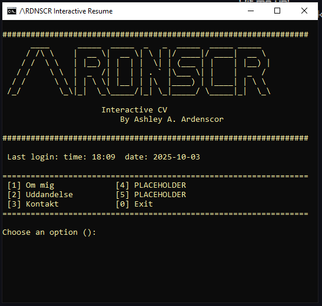

My Projects: |
Here's my projects gonna go
Here's my projects gonna go
Jeg fik til opgave om at lave et script der kunne tage info ud af vores fejlfindingsmiljø'er
Den info inkludere;
- Server Navn
- OS Version
- Om der er tilgængelige opdateringer
- IP Addresse
- Subnet Masken
- Default Gateway
- Installerede Server Roller
Check det ud på min GitHub!
Den her hjemmeside!
Min lærer opfordrede mig til at lave en hjemmeside, så jeg rent faktisk kunne vise folk mit interaktive CV, uden den sketchy vibe af at sende et uopfordret batch-script.
Så nu har vi denne hjemmside som resume!
Jeg besluttede at lave mit CV som en DOS-menu, fordi jeg tænkte, at det ville gøre et ellers CV lidt sjovere.!
Jeg havde ingen ide om, at det ville resultere i, at jeg lavede en hjemmeside.
